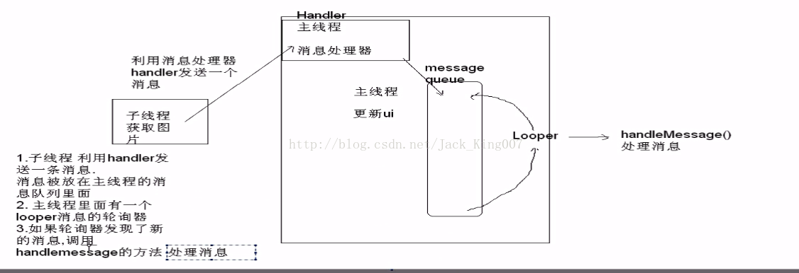

Hanlde消息处理机制的复习——网络图片下载
安卓为了提高用户体验，在主线程是不允许过多的线程执行的，主线程又叫UI线程，所以呢，再初学安卓的时候，大家都只有用new thread（new runnble）去开启子线程去更新，但是呢，子线程又不运行子线程更新UI，，所以呢，问题来了。
大家就想了，我都开了子线程去执行耗时操作了，你还不准我更新UI，怎么办呢
就像我现在要写的Demo，下载图片，我开启线程去请求网络，然后图片被下载了，我要用Imageview设置图片了， 你有不准我去更新UI，那我就从新通知主线程更新吧，这时候我们就像能不能发个消息给主线程，把图片发送给他，让他更新呢，这个是可以有的。其实在安卓有专门负责这一块的，异步......
好啦，这个时候，安卓有专门的消息机制handler
1.子线程利用handler发送一条信息
你想想安卓有那么多的消息要发送，多了就要排队不是............Looper（消息队列）
2.消息就被放在消息队列中，如果轮到你了，他就会调用handlemessage方法处理消息。
3.你需要的是在子线程 实例化 Message对象
4.Message 有 what 特征码 和obj 你要发送的内容

这一节是复习消息机制，其他内容我就不叙说了。
同时在安卓里有专门负责处理图片的类 bitmap
BitmapFactory.decodeStream(is);能从流中解析出图片 得到一个bitmap图像，然后用Message发送到 主线程进行 更新
package com.itheima.imageiewer;
import java.io.InputStream;
import java.net.HttpURLConnection;
import java.net.URL;
import android.app.Activity;
import android.graphics.Bitmap;
import android.graphics.BitmapFactory;
import android.os.Bundle;
import android.os.Handler;
import android.os.Message;
import android.text.TextUtils;
import android.view.View;
import android.widget.EditText;
import android.widget.ImageView;
import android.widget.Toast;
public class MainActivity extends Activity {
protected static final int UPDATE_UI = 1;
protected static final int ERROR = 2;
private ImageView iv_beauty;
private EditText et_path;
// 主线程创建消息处理器
Handler handler = new Handler() {
// 但有新消息时调用
@Override
public void handleMessage(Message msg) {
if (msg.what == UPDATE_UI) {
// 获取消息对象
Bitmap bitmap = (Bitmap) msg.obj;
// 更新UI
iv_beauty.setImageBitmap(bitmap);
} else if (msg.what == ERROR) {
// Toast也是属于UI的更新
Toast.makeText(getApplicationContext(), "图片获取失败！", 0).show();
}
}
};
@Override
protected void onCreate(Bundle savedInstanceState) {
super.onCreate(savedInstanceState);
setContentView(R.layout.activity_main);
this.iv_beauty = (ImageView) this.findViewById(R.id.iv_beauty);
this.et_path = (EditText) this.findViewById(R.id.et_path);
}
public void watch(View view) {
final String path = this.et_path.getText().toString().trim();
if (TextUtils.isEmpty(path)) {
Toast.makeText(this, "路径不能为空", 0).show();
} else {
new Thread() {
@Override
public void run() {
try {
URL url = new URL(path);
HttpURLConnection connection = (HttpURLConnection) url
.openConnection();
// 设置请求方式
connection.setRequestMethod("GET");
// 设置超时时间
connection.setConnectTimeout(10000);
// connection.setRequestProperty(field, newValue)
int code = connection.getResponseCode();
if (code == 200) {
InputStream is = connection.getInputStream();
Bitmap bitmap = BitmapFactory.decodeStream(is);
// 告诉主线程一个消息，帮我更新ui，内容：bitmap
Message msg = new Message();
// 消息的代号，是一个int类型
msg.what = UPDATE_UI;
// 要传递的消息对象
msg.obj = bitmap;
// 利用handler发送消息
handler.sendMessage(msg);
} else {
Message msg = new Message();
msg.what = ERROR;
handler.sendMessage(msg);
}
} catch (Exception e) {
e.printStackTrace();
/*
* Runs the specified action on the UI thread. If the
* current thread is the UI thread, then the action is
* executed immediately. If the current thread is not
* the UI thread, the action is posted to the event
* queue of the UI thread.
*/
runOnUiThread(new Runnable() {
@Override
public void run() {
Toast.makeText(MainActivity.this, "加载失败", 0)
.show();
}
});
}
}
}.start();
}
}
}
记住加权限哦